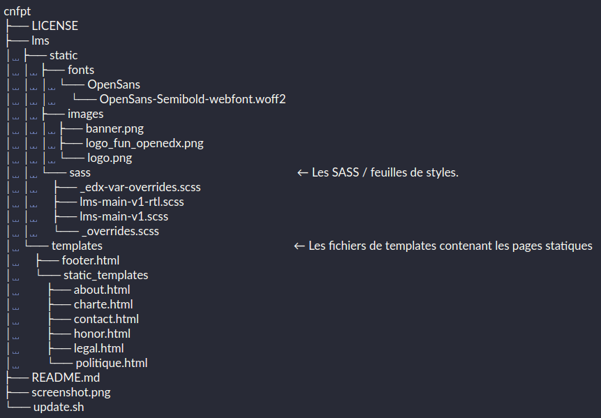

Mise en préprod des MB¶
Le déploiement se fait sur les infras objectif libre avec jenkins
Mettre à jour les pages statiques et autres actions sur le thème.¶
Pour modifier une page statique il faut:
o La localiser dans le répertoire lms/static/template.
o La modifier
o L’essayer sur le serveur local
Exemple avec CNFPT :
{kind=link}
Pour ajouter une page statique (qui n’existe pas), il faut:
o Créer une entrée de cette page dans la configuration du serveur :
On y accède par rebond à travers ssh :
ssh bastion_dev -L8090:192.168.10.24:8081Puis ajouter dans le champs “LMS python/django extra options” (exemple pour CNFPT) :
MKTG_URL_LINK_MAP = { u'ABOUT': u'about', u'POLITIQUE': u'politique', u'CHARTE': u'charte', u'HONOR': u'honor', u'LEGAL': u'legal', u'CONTACT': u'contact', u'ROOT': u'root', }o Ensuite il faut modifier le fichier footer.html pour ajouter un lien vers cette page
o Ne pas oublier de faire un commit sur le repository contenant le thème
{kind=link}
Jenkins¶
Jenkins permet de faire le build de la marque blanche en plusieurs étapes
On y accède par rebond à travers ssh:
ssh bastion_dev -L8089:192.168.10.24:80
{kind=link}
build-image-edxapp-preprod : refait un build global si on change la version de edx-platform
build-all-images-for-mb-preprod-fun: permet de builder une nouvelle image si on a changé le thème
Dans tous les cas il faut mettre à jour les serveur, la tâche update-mb-preprod sert à cela